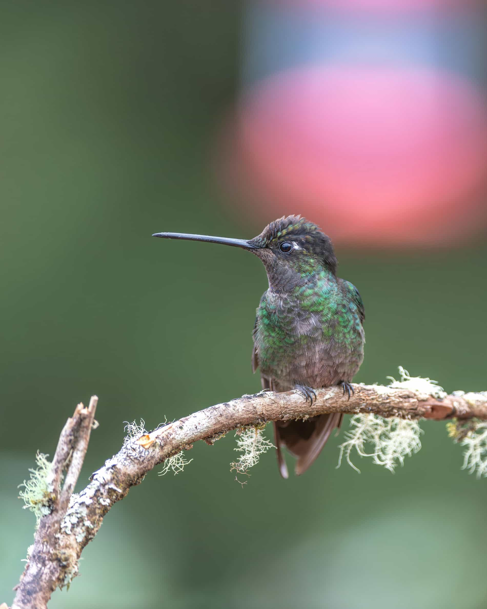

Data
- Area: 51,100 sq km
- Population: 5,200,000
- Capital: San José
- Languages: Spanish
- Currency: Costa Rican Colón (CRC)
- Time Zone: UTC−6
- Calling Code: +506
- Internet TLD: .cr
Weather

Temperature: 22 °C
Wind Speed: 4 km/h
Wind Chill: